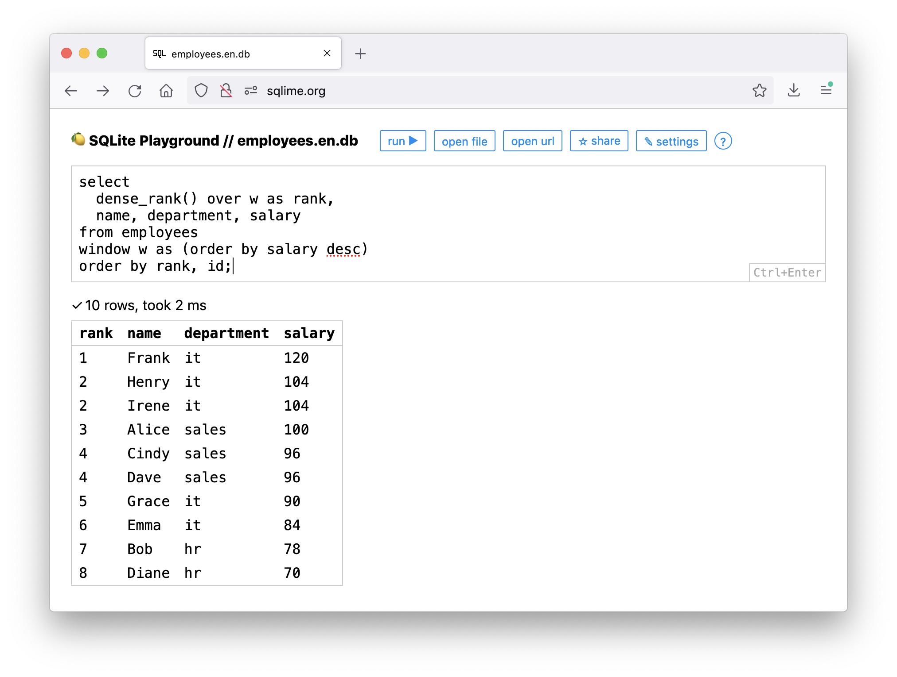

SQLime is an online SQLite playground for debugging and sharing SQL snippets. Kinda like JSFiddle or CodePen, but for SQL instead of JavaScript.

Here are some notable features:
🔋 Full-blown database in the browser
SQLime is backed by the latest version of SQLite, provided by an excellent sql.js project. It provides a full-featured SQL implementation, including indexes, triggers, views, transactions, CTEs, window functions and execution plans.
🔌 Connect any data source
Connect any local or remote SQLite database. Both files and URLs are supported. For example, try loading the Metro Database from the GitHub repo.
🔗 Save and share with others
SQLime saves both the database and the queries to GitHub so that you can revisit them later or share them with a colleague. The database is stored as a plain text SQL dump, so it's easy to read the code or import data into PostgreSQL, MySQL, or other databases.
🔒 Secure and private
There is no server. SQLime works completely in the browser. The GitHub API token is also stored locally. Queries are saved as private GitHub gists within your account. Your data is yours only.
⌨️ Dead simple
SQLime has zero third-party dependencies other than SQLite (sql.js). Good old HTML, CSS, and vanilla JS — that's all. No frameworks, no heavy editors, no obsolete and vulnerable libraries. Just some modular open-source code, which is easy to grasp and extend.
Follow @ohmypy on Twitter to keep up with new features 🚀
Keyboard shortcuts
| win | mac | |
|---|---|---|
⌃↵ |
⌘↵ |
run query |
⌃O |
⌘O |
open file |
⌃U |
⌘U |
open url |
⌃S |
⌘S |
save and share |
⌃/ |
⌘/ |
show tables |